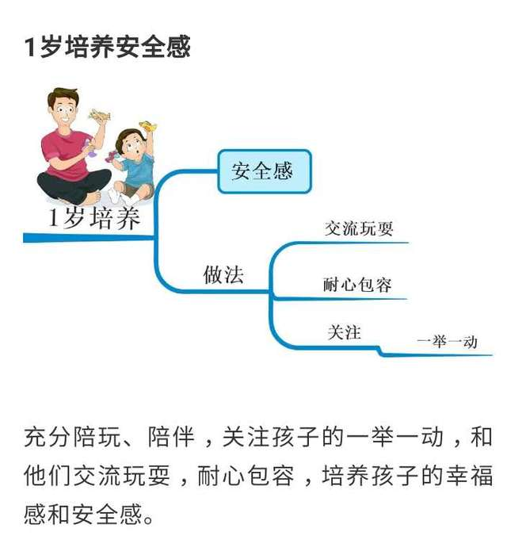
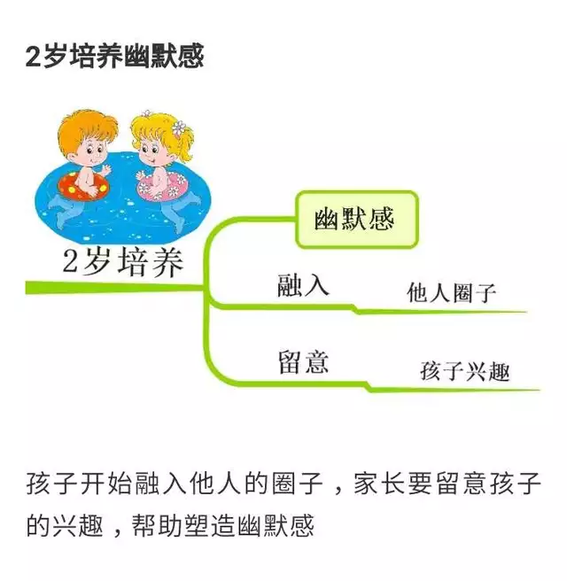
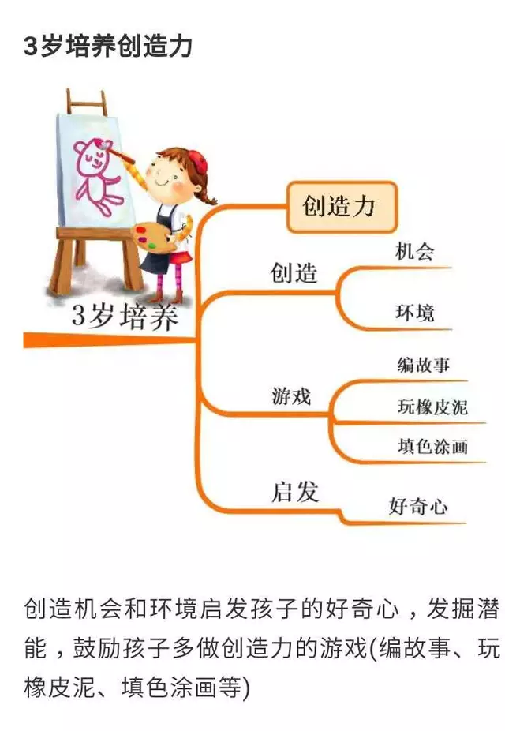
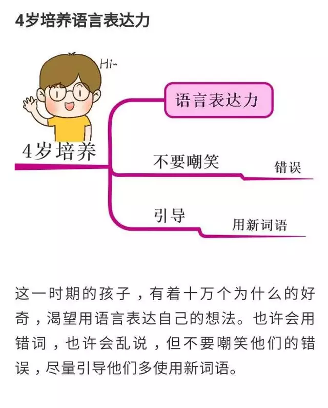
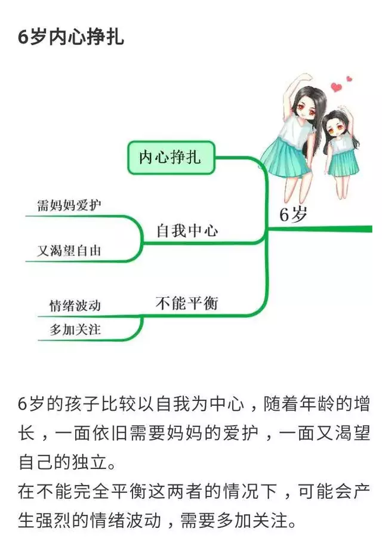
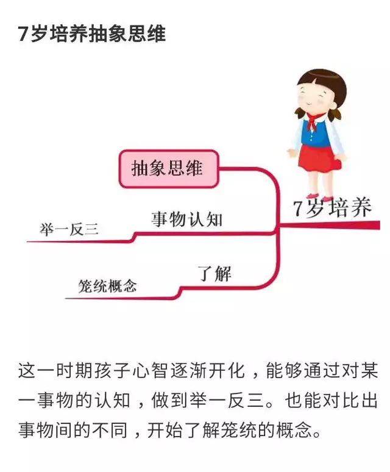
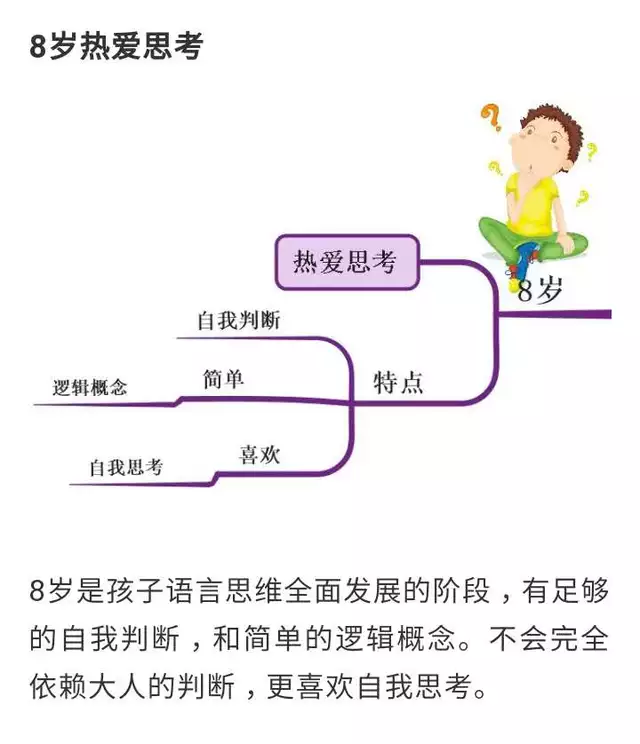

现在很多小孩子在上小学的时候，一些资料上面都建议家长让孩子学习和掌握思维导图的绘制方法。那么，为什么很多资料给孩子的入学建议都是学会绘制思维导图呢？

原因是因为上小学的孩子在学校学习的知识都是零碎的基础知识，而思维导图可以有效的帮助孩子快速记忆知识，可以累积到更多知识。
小美孩子在上小学前，小美了解了一些入学资料，资料上建议小美尽早让孩子学习和掌握思维导图的绘制方法，小美后来在网上查询了解了一下思维导图，还买了一些有关思维导图的书，通过书上的方法，来一步步引导思思，绘制思维导图。后来小美还不断地让孩子去发散他的想象力，画出复杂多彩的图画。正是因为小美让孩子尽早的学会了绘制思维导图，在之后的学习中，孩子每天都会把学到的知识绘制成思维导图来记忆，孩子的记忆也更牢固了，从而学习到了很多知识，变得非常优秀。
那么，思维导图究竟是什么？
其实，被人们熟知的常见的思维导图被分为两种，一种叫Thinking Map，另一种叫Mind Map。目前在国内应用得比较广泛的是已经列入新加坡、英国中小学必修课里的Mind Map。
要知道，Thingking Map和Mind Map最大的区别，就在于Mind Map只有1种表现形式，它以一个中心点为主体，向外延伸思维的图示方式。也是因为只有一种图示方式，使用Mind Map会让孩子记起来也不容易混淆和错乱。
最重要的是，Mind Map的绘制过程也是非常的简单。总而言之，Mind Map可以让孩子们在潜移默化中，逐步学会建立整体与局部、细节与执行的思考以及行为模式。

思维导图对孩子有什么用？
绘制思维导图确实对孩子有很大的益处，思维导图可以帮助不太识字的孩子，自己用一些图形、符号、曲线等等去联想记忆，使自己的记忆更加牢固。
思维导图更重要的是，如果学龄前儿童学会了思维导图，等他长大到了上学的时候就可以熟练的使用思维导图去帮助自己解决一些学习上问题，也可以让学习变得更加轻松一些。
那么，利用思维导图该如何教育孩子呢？
美国耶鲁大学曾经研究出1到8岁是孩子最黄金的八年时间，这八年，如果父母能把握好对孩子进行教育，可以达到非常好的效果。

①1岁培养安全感：
一岁的孩子，父母要培养孩子的安全感，在生活中要多陪孩子进行玩耍，陪伴孩子，还要关注孩子的一举一动，和孩子进行交流的时候，要耐心。
在孩子犯错的时候要包容孩子，充分培养孩子的幸福感和安全感。
②2岁培养幽默感：
父母和两岁孩子交流的时候，就要注意培养孩子的幽默感了，父母这时候应该融入孩子的圈子，发现和询问孩子的兴趣爱好，从孩子喜欢的方面来帮助孩子塑造幽默感。
这样孩子也会积极地配合父母，还有利于亲子关系更加亲密。如果孩子有较强的幽默能力，可以为他们排解许多困扰，使孩子一生受益。
③3岁培养创造力：
要知道三岁孩子有非常高的好奇心，这时候，父母需要把握好孩子的好奇心，培养孩子的动手能力，还要鼓励孩子做一些有助于创造力的游戏。
比如和孩子一起编故事和玩橡皮泥，让孩子有充分的参与感。
④4岁培养语言表达力：
四岁孩子是有很多想法的孩子，他们渴望用自己的语言表达出自己在某一刻的想法。
孩子也有可能会乱说，但是父母不要嘲笑孩子的错误，应该引导孩子多使用一些新的词汇来表达自己的想法。

⑤5岁培养亲子关系：
五岁孩子开始懂事了，也比较敏感，这个阶段的孩子会比较需要亲密的亲子关系，他们会格外依赖自己的父母，也极度需要父母的肯定和鼓励。
这时候父母给予孩子肯定，会让孩子建立自信心，自信的孩子在以后可能会很优秀。

⑥6岁内心挣扎：
六岁的孩子通常比较自我一些，随着年龄的增长，他们希望自己可以独立一些。
但是对于这个阶段的孩子来说，妈妈也会比较爱护孩子，在孩子不能平衡，独立和妈妈爱护的情况下，这时孩子可能会产生强烈的情绪波动，父母一定要多加关注孩子的情绪变化。

⑦7岁培养抽象思维：
七岁的孩子心智逐渐会开化，能够通过对某事物的认知，做到举一反三。能充分的对比事物和事物之间不同的特征。
这时候父母应该让孩子开始了解更多的事物，并且进行区分，这样可以让孩子学习到很多。

⑧8岁热爱思考：
八岁是孩子思维语言发展的阶段，他们会有足够的自我判断和一些逻辑概念，他们不会完全依赖大人给的判断，他们更喜欢自己做决定，更喜欢独立思考。
这时候家长应该把一些小事的选择权交给孩子自己，让孩子来为自己做决定，而不是一味的帮助孩子做决定，当孩子自己做决定的时候，还可以锻炼孩子独立思考的能力，对孩子来说也是有利的。

其实，当孩子刚刚对世界有了初步的认知的时候，孩子的想象力已经是非常发散的，对于年龄小的幼孩子来说，想象力恰恰是最好的思维发散依赖，也是最简单和有趣的思维导图绘画方式。我应该在孩子成长的阶段，尽早地对孩子进行思维导图的训练，让孩子在之后的学习和生活中可以快速记忆很多知识。